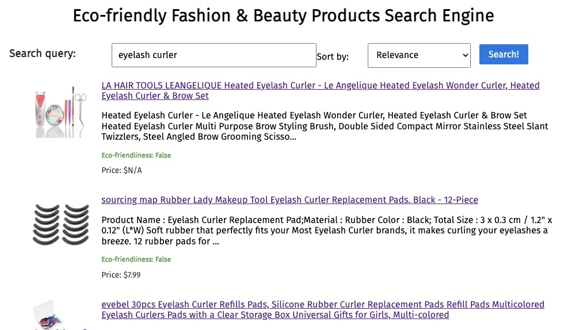

Search Engine for Eco-friendly Fashion & Beauty Products
A vertical search engine for Amazon Fashion & Beauty products, where eco-friendliness is highly weighted.
Keywords: Information Retrieval; Search Engine; NLP; Multi-modal; Machine Learning